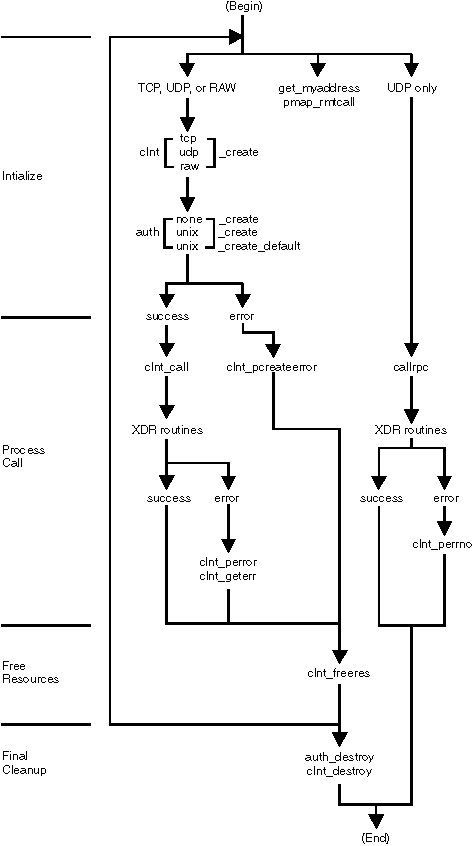
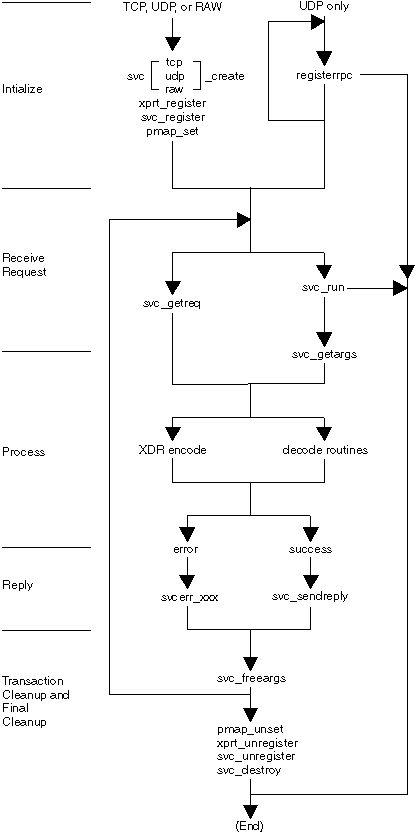

The RPC model is similar to the local procedure call model. In the local model, the caller places the argument to a procedure in a specified location such as a result register. Then, the caller transfers control to the procedure. The caller eventually regains control, extracts the results of the procedure, and continues the execution.
RPC works in the same way: One thread of control winds logically through the caller and server processes as follows:
See the following figures for an illustration of the RPC model: RemoteProcedureCall(
Client )

Remote Procedure Call (Server)
